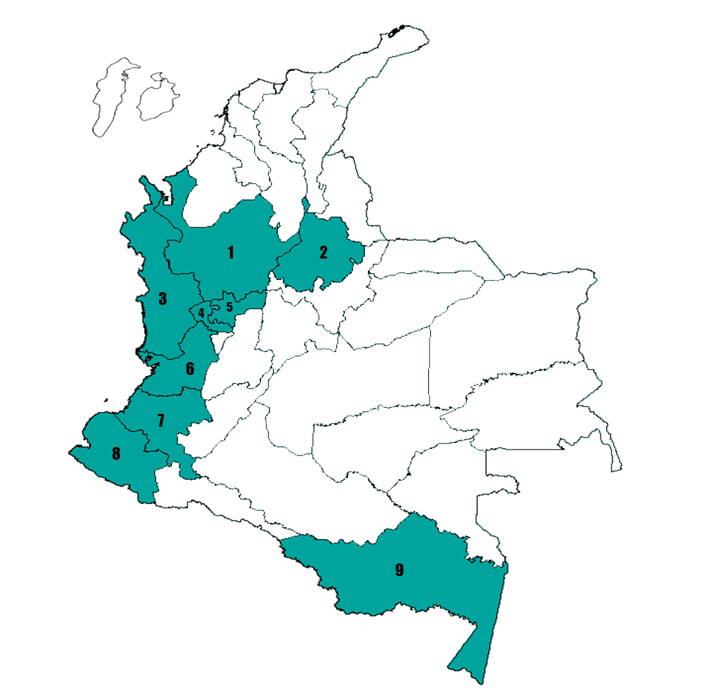

Aedes albopictus (Skuse, 1894)
Sinonimia
- samarensis Ludlow
- nigritia Ludlow
- quasinigritia Ludlow
- culex albopictus
Nombre Comun
- Mosquito tigre asiático
BIONOMIA
Presenta una alta tolerancia ecológica y se encuentra con más frecuencia en el peridomicilio con vegetación. Puede alimentarse entrando a las viviendas o fuera de ellas, con actividad diurna y bimodal. Las hembras son hematófagas de otros vertebrados fuera del humano.
Tienen la capacidad de ovipositar sin necesidad de alimentación sanguínea previa. Los estadios inmaduros se encuentran en recipientes naturales incluyendo huecos de árboles, hojas de palmera, huecos en roca. También se han registrado en ambientes artificiales y con aguas poco oxigenadas (mostrando rápida adaptación).
DISTRIBUCIÓN EN COLOMBIA

- Antioquia
- Santander
- Chocó
- Risaralda
- Caldas
- Valle del Cauca
- Cauca
- Nariño
- Amazonas
IMPORTANCIA MEDICA
Transmisor de:
- Dengue
- Chikungunya
- Zika
- Fiebre amarilla
- malaria
- filariasis
- virus del nilo occidental
IMPORTANCIA VETERINARIA
Transmisor de:
- Encefalitis equina venezolana
- Encefalitis equina del este
- malaria en aves
- encefalitis japonesa
TAXONOMIA

- Clípeo sin escamas blancas.
Cabeza

- Escudo con franja blanca estrecha en posición longitudinal - medial.
Tórax

- Mesepimeron con parches de escamas blancas no separados, en forma de V.
Tórax
- Parte anterior del fémur de la pata media sin raya longitunial blanca.
Patas
REFERENCIAS
- Rueda, L. (2004). Pictorial keys for the identification of mosquitoes (Diptera: Culicidae) associated with Dengue Virus Transmission. New Zealand. ZOOTAXA. 589: 1-60 WRBU website
- Carvajal, j. et al. (2016). Detección de Aedes albopictus (Skuse) (Diptera: Culicidae) en el municipio de Istmina, Chocó, Colombia. Biomédica 2016;36:438-46. doi: http://dx.doi.org/10.7705/biomedica.v36i3.2805
- (http://wrbu.si.edu/wrbu.html)